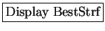
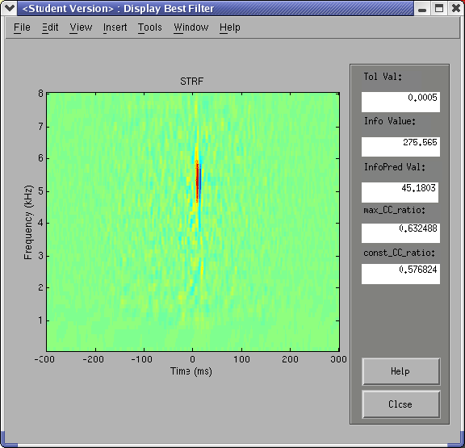
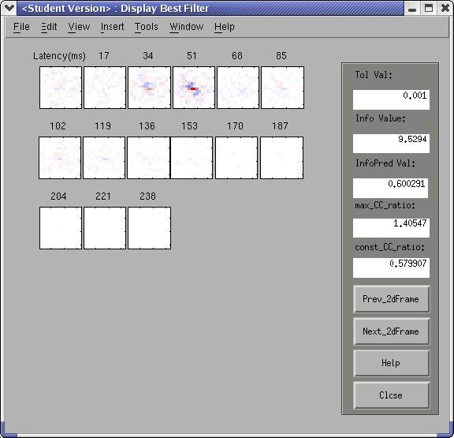

Next: Load Prev Result
Up: Validate
Previous: Display Info
Contents
Once the
 button in the main window is clicked,
STRFPAK does the following three things. It sorts the estimated STRFs based on the predicted information values, chooses the best STRF (based on info values)
and displays the best STRF in the Display Best Filter window.
Figures 3.21 and 3.22 show
the best estimated STRFs for the auditory and visual example.
The right panel in the window gives the tolerance value used for this STRF,
the information value from the actual data,
the predicted information value of the best estimated STRF,
the
 and the
and the
 (see above, under the Validation section).
If the spatial domain of the stimulus file is
(see above, under the Validation section).
If the spatial domain of the stimulus file is  ,
the best filter is shown as
a list of video frames.
If the
,
the best filter is shown as
a list of video frames.
If the  button is clicked, the intermediate help window appears.
button is clicked, the intermediate help window appears.
Figure 3.21:
Best estimated STRF for the auditory example
|
 |
Figure 3.22:
Best estimated STRF for the visual example
|
 |
Next: Load Prev Result
Up: Validate
Previous: Display Info
Contents
2004-08-09